勞動是指人類為了「賺取報酬」，在生產過程中所付出的各種勞心（耗精神：如教師教書、醫師看病、設計師製圖）與勞力（耗體力：農夫耕作、工人蓋房）。
★ 課本重要考點：若付出心力的目的不是為了賺取報酬（如出國旅遊休閒、醫師出隊義診、志工打掃），在經濟學上不屬於勞動！
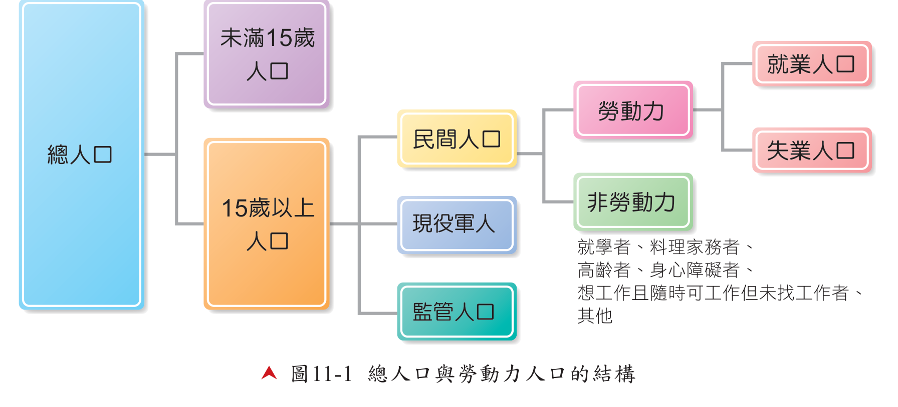
| 人口類別 | 定義特徵與法規標準 | 課本典型實例與考點提醒 |
|---|---|---|
| 15歲以上民間人口 | 滿 15 歲以上總人口中，扣除「現役軍人」與「監管人口（受刑人、收容人）」後之一般社會大眾。 | 公式母數： 計算勞動參與率時的分母！切忌直接代入「總人口」或「15歲以上總人口」。 |
| 勞動力 （Labor Force） |
【量的衡量】年滿 15 歲以上，可以工作（兼具工作能力與工作意願）的民間人口。 勞動力 ＝ 就業人口 ＋ 失業人口 |
在學無工作意願的學生、家庭主婦、退休長者不計入勞動力！ |
| 就業人口 | 滿 15 歲以上之民間人口，且符合以下兩類之一： ① 從事有酬工作者（領有固定薪資或營業收入者）。 ② 一週內從事 15 小時以上之「無酬家屬工作者」！ |
• 教師、律師、行員、外送員。 • 統測高頻題： 在自家開設的小吃店或工廠幫忙，雖未領薪水但一週超過 15 小時，屬於就業人口！ |
| 失業人口 | 年滿 15 歲以上，同時具備以下三項條件者： ① 目前無工作； ② 隨時可以工作； ③ 正在找工作或已找工作在等待結果。 |
• 剛踏出校園正積極面試投履歷的大學畢業生。 • 等待恢復工作者、已錄取但尚未正式上班且無報酬者。 |
| 非勞動力 | 滿 15 歲以上民間人口中，無工作意願或無工作能力者。 | 就學者（無打工學生）、料理家務者（全職家庭主婦）、高齡退休者、身心障礙者、想工作但未積極找工作者（怯志工作者）。 |
範例： 某國 15 歲以上民間人口 500 萬人，勞動力人口 400 萬人（非勞動力 100 萬人）。
➔ 勞動參與率 ＝ (400 萬 / 500 萬) × 100% ＝ 80%。
【質的衡量】： 衡量勞動生產效率之關鍵指標！
範例： 蘋果公司 1,000 名員工年生產 2,000,000 支手機。
➔ 勞動生產力 ＝ 2,000,000 / 1,000 ＝ 2,000 支／人。
人一天時間固定只有 24 小時，必須在「工作（賺取工資）」與「休閒（享受生活）」之間進行取捨：
• 多工作一小時，就必須犧牲一小時的休閒；多享受一小時休閒，就必須放棄一小時的工資收入！
• 休閒的機會成本 ＝ 工資率（W）！當工資率提高時，會同時誘發兩種方向相反的經濟效果：
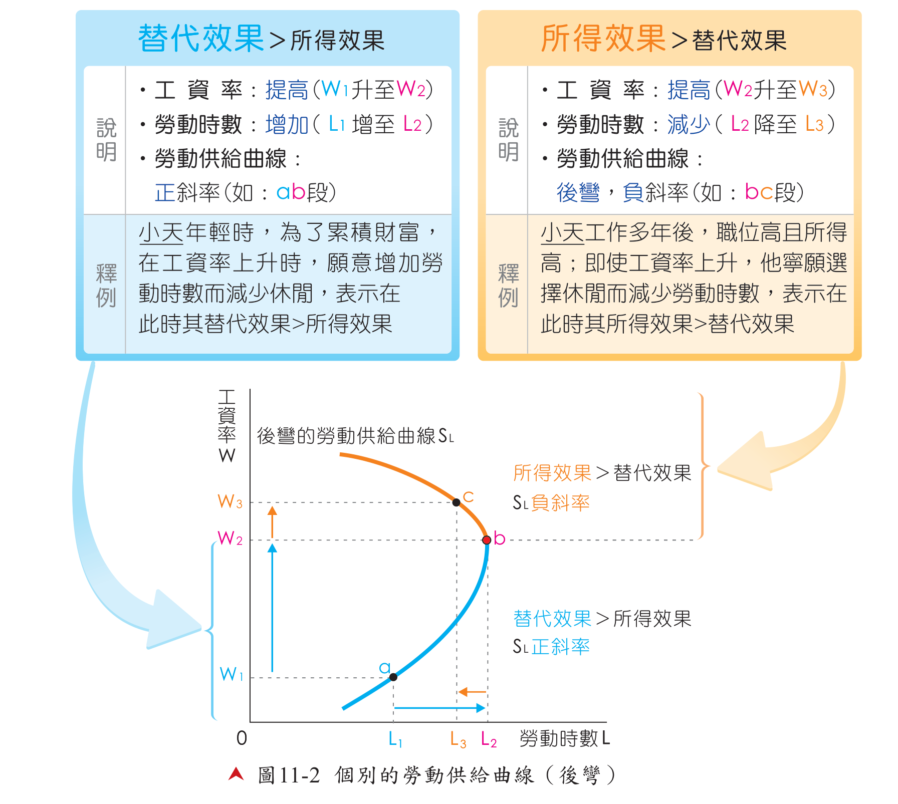
| 曲線階段 | 效果相對大小 | 工資率與工時關係 | 幾何斜率與實例說明 |
|---|---|---|---|
| 低工資階段 （ab 段） |
替代效果 ＞ 所得效果 | W ↑ ➔ L ↑ 工資上升，勞工願意加班賺錢！ |
正斜率（向右上方延伸）。 例：小天年輕剛入行，為累積第一桶金，加薪便自願多加班拼收入。 |
| 高工資階段 （bc 段） |
所得效果 ＞ 替代效果 | W ↑ ➔ L ↓ 工資再漲，勞工寧要休閒減少加班！ |
負斜率（向後彎折）！ 例：小天職位高所得豐厚，追求生活品質，加薪反而請假陪家人出國渡假。 |
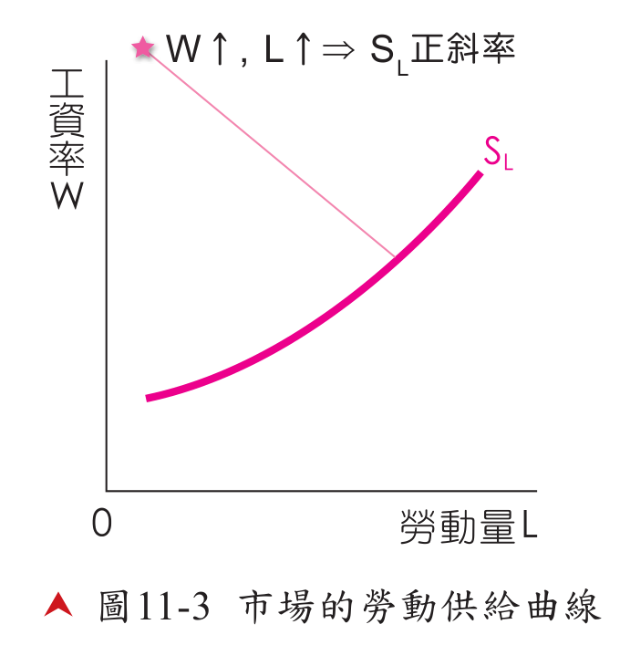
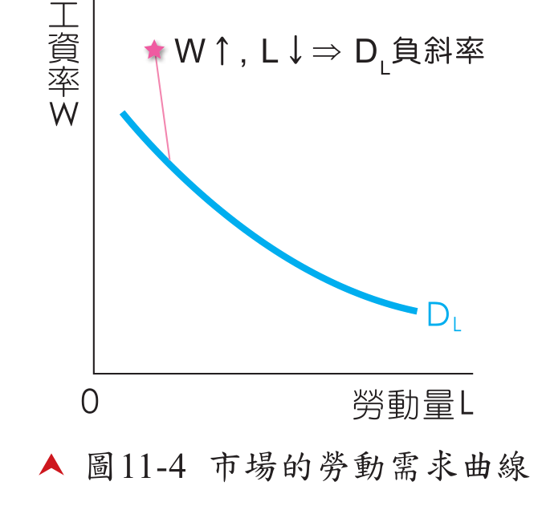
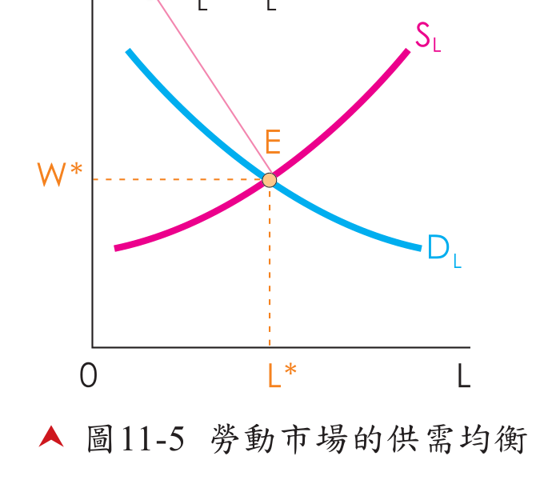
| 劃分維度 | 工資種類 | 定義說明與特性 | 課本典型實例 |
|---|---|---|---|
| 1. 依「形成方式」區分 | 經濟工資 | 以勞動者在生產過程中的實際貢獻度／績效高低決定的工資。 | 房仲人員按成交戶數提領的銷售佣金、業績分紅獎金。 |
| 契約工資 | 以僱主與勞動者雙方事前簽訂的勞動契約條款所約定的工資。 | 職棒球星彭政閔與中信兄弟隊簽下 4 年 1,440 萬元的合約薪水。 | |
| 2. 依「支付方式」區分 | 貨幣工資 | 以法定貨幣形式發放的薪水（一般金融帳戶匯款入帳）。 | 銀行行員每月固定匯入帳戶之月薪 40,000 元。 |
| 實物工資 | 以具體有形物品作為折抵發放之代價。 【通膨利弊】： 當物價膨脹（貨幣貶值）時，領取實物工資較有利！當物價平穩時，領取貨幣工資較有利（選擇多元）。 |
公務員配給米油麵粉、公司主管配車、油票補助、提供免費員工宿舍與午餐。 | |
| 3. 依「購買力」區分 | 名目工資 （貨幣工資） |
以貨幣數量金額所表示的工資數字（即薪資單上的面額）。 | 恩尚在餐廳當洗碗工領取的面額月薪 30,000 元。 |
| 實質工資 （購買力工資） |
以貨幣實質購買力所表示的工資，即領取名目工資後實際上能買到的財貨與勞務數量。 公式 11-3：實質工資 ＝ (名目工資 / 物價指數) × 100 |
恩尚原薪 30,000 元可買一台 iPad；通膨後 iPad 漲價買不起，表示實質工資縮水！ | |
| 4. 依「計算方式」區分 | 計時工資 | 以工作時間長短（小時、日、月）為計算基準的工資。 | 手搖飲店工讀生時薪 180 元。 |
| 計件工資 | 以生產件數／完成量為計算基準的工資。 | 插畫家畫一張插圖領 500 元、工廠代工按件計酬。 |
範例： 娜美今年名目工資為 480,000 元，去年基期物價指數為 100，今年物價指數漲至 120。
➔ 娜美今年的實質工資 ＝ (480,000 / 120) × 100 ＝ 400,000 元（名目賺 48 萬，但實質購買力僅相當於基期的 40 萬元！）。
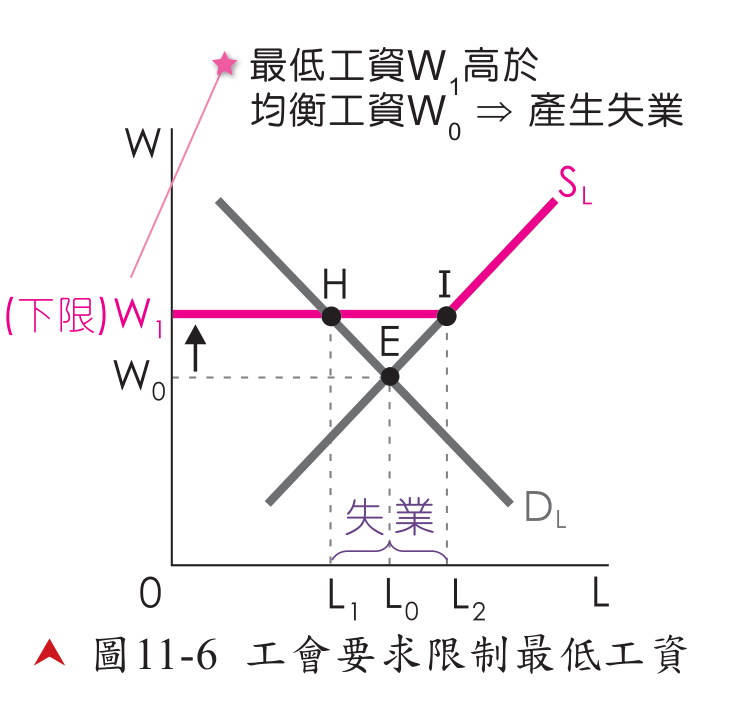
• 做法： 代表勞工向僱主強制訂定高於均衡市價之最低工資 W1 ＞ W0。
• 後果： 供給量 L2 大於需求量 L1，市場產生超額供給，造成失業（失業量 ＝ L1L2）！
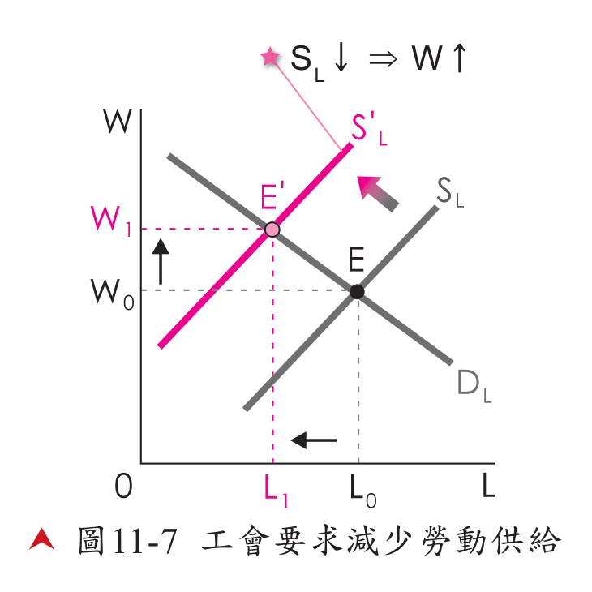
• 做法： 要求縮短工時、推動證照制度拉高從業門檻。
• 後果： 供給線左移使工資提高（W0 ➔ W1），但代價是勞動僱用量減少（L0 ➔ L1）！
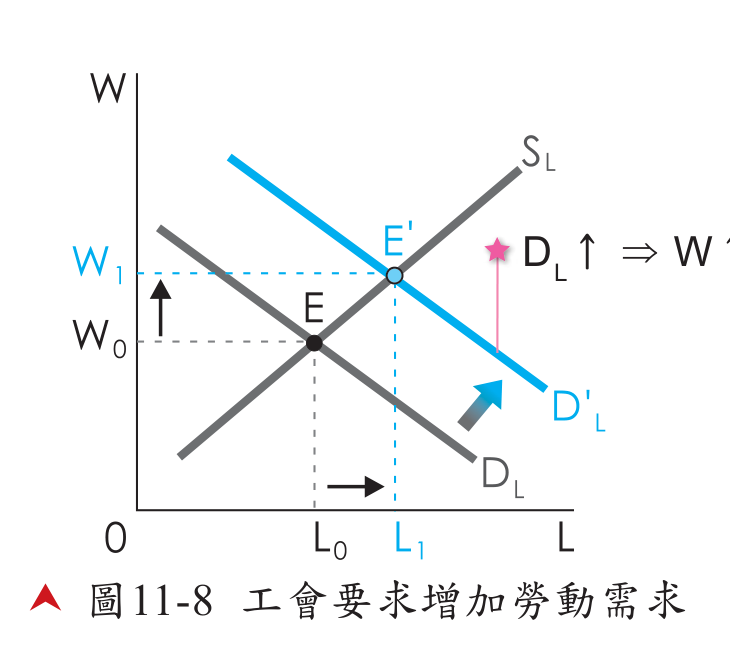
• 做法： 辦理在職職訓提高勞動生產力；協助廠商推廣產品創造引申需求。
• 後果： 🌟 唯一既能提高工資（W ↑）又能增加僱用量（L ↑）的最佳方法！
• 廣義土地： 一切天然自然資源（陸地、森林、礦產、水利、地熱、風力）。
• 狹義土地： 僅指陸地面積。經濟學地租分析多以狹義陸地為對象。
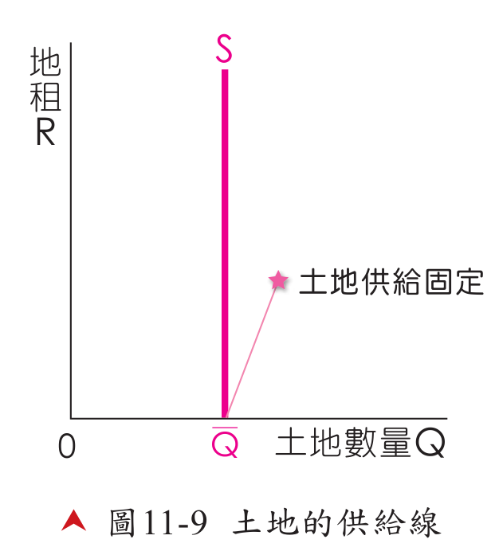
• 成因： 土地供給絕對固定（垂直線），相對於大眾需求具有稀少性，故產生稀少地租。
• 決定關鍵： 地租的高低完全取決於「土地需求的強弱」！
需求愈強（D2），地租愈高（R2）；需求疲軟（D1），地租愈低（R1）；當需求為 D0 時，地租為 0。
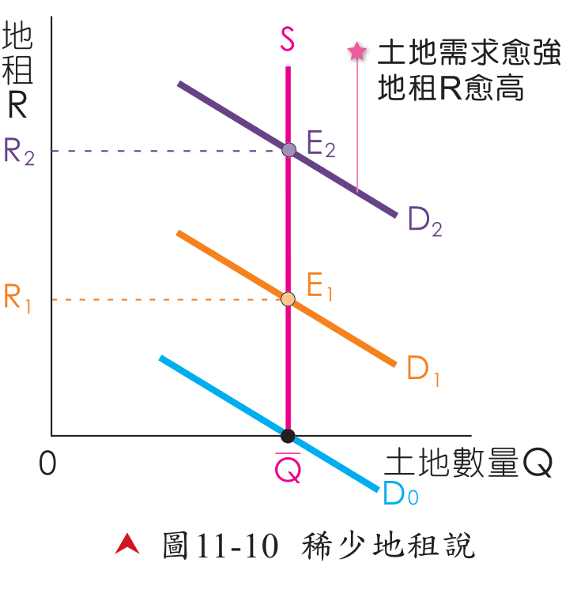
• 成因： 土地的「肥沃程度不同」或「地理位置不同」，導致各級土地的收益不同而產生差額。
• 邊際土地（Marginal Land）： 最後那塊最貧瘠、收益剛好僅夠支付生產成本的土地。邊際土地的地租恆為 0！
• 差額地租公式：
差額地租 ＝ 該級土地總收益 － 邊際土地收益（生產成本）
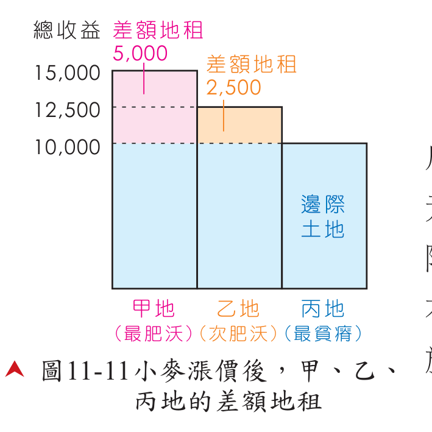
假設甲（最肥沃）、乙（次肥沃）、丙（最貧瘠）三塊土地面積相同，生產成本皆為 10,000 元，產量分別為 600 斤、500 斤、400 斤：
| 小麥價格水準 | 土地項目 | 小麥產量 | 總收益（P × Q） | 生產成本 | 差額地租（總收益 － 成本） | 土地角色定位 |
|---|---|---|---|---|---|---|
| 每斤 20 元時 （表 11-1） |
甲地（最肥沃） | 600 斤 | 20 × 600 ＝ 12,000 元 | 10,000 元 | 2,000 元 | 優等土地（享有差額地租） |
| 乙地（次肥沃） | 500 斤 | 20 × 500 ＝ 10,000 元 | 10,000 元 | 0 元 | 🌟 邊際土地（收益剛好抵平生產成本） | |
| 丙地（最貧瘠） | 400 斤 | 20 × 400 ＝ 8,000 元 | 10,000 元 | －2,000 元 | 入不敷出（閒置，不投入生產） | |
| 漲至每斤 25 元後 （表 11-2） |
甲地（最肥沃） | 600 斤 | 25 × 600 ＝ 15,000 元 | 10,000 元 | 5,000 元（地租激增 3,000 元） | 超特等土地 |
| 乙地（次肥沃） | 500 斤 | 25 × 500 ＝ 12,500 元 | 10,000 元 | 2,500 元（晉升享有地租） | 優等土地 | |
| 丙地（最貧瘠） | 400 斤 | 25 × 400 ＝ 10,000 元 | 10,000 元 | 0 元 | 🌟 新的邊際土地（加入生產行列） |
★ 統測陷阱提防： 絕非地主貪婪漲租導致糧價飆漲！而是先有產品價格（糧價）上漲，引申帶動要素價格（地租）上漲！
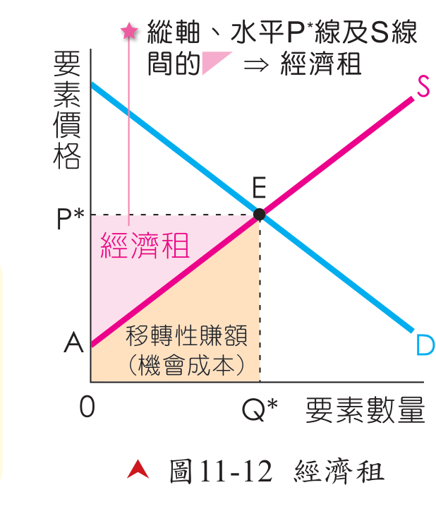
要素投入生產時，要素所有人心中皆有一筆「最低要求的保留價格」（即轉作其他用途所能得到的最高代價，也就是機會成本）：
| 指標項目 | 經濟意義 | 圖 11-12 對應幾何區塊 | 敏鎬代言按摩椅課本實例（P.20） |
|---|---|---|---|
| 實際獲得報酬 | 市場協商成交總金額（P* × Q*） | 矩形 P*EQ*0 | 最終簽約代言費 1,000 萬元 |
| 移轉性賺額 （機會成本） |
要素所有人願投入生產所要求的最低報酬門檻（低於此數就跳槽）。 | 梯形 AEQ*0（供給線下方、橫軸上方） | 敏鎬心裡最低可接受的 700 萬元 |
| 經濟租 （要素純剩餘） |
實際報酬超出最低要求的差額（類似生產者剩餘 PS）。 | 三角形 P*EA（市價線下方、供給線上方） | 1,000 萬 － 700 萬 ＝ 300 萬元 |